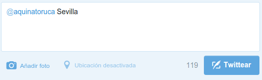

Simpleza
Nuestro equipo de desarrollo ha creado una Api capaz de responderte con el tiempo de tu ciudad a través de nuestro twitter oficial.
Consiste en escribirle un tweet a nuestra cuenta oficial (@aquinatoruca) seguido de la ciudad que quieras saber el tiempo. En poco tiempo
nuestro aquinator te responde a tu tiempo con varios datos sobre el tiempo en dicha ciudad.
A continuación, le vamos a mostrar un ejemplo de cómo se realizaría la consulta:

Una vez realizo esto, nuestro Aquinator te contesta con el tiempo en dicha ciudad.
Para poder realizar la contestación al correo, se pincha en el recuadro superior derecha que pone "Descarga" y se descarga el archivo alojado en GitHub que pone "aquinator.py".
Una vez descargado, abrimos la carpeta contenedora donde se encuentra el archivo y escribimos lo siguiente: "python aquinator.py"
Finalmente, al ejecutar el archivo python se contestará al tweet recibido.
*PD: Si la cuenta no tiene ninguna mención, no contesta a ningún tweet.